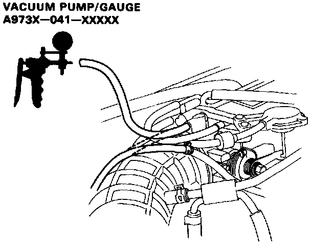
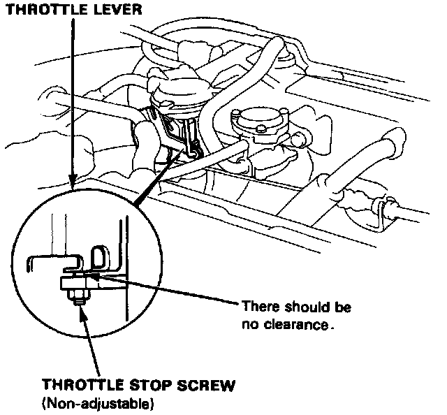

Throttle Body: Testing and Inspection
Throttle Body InspectionCAUTION: Do not adjust the throttle stop screw since it cannot be reset.
1. Start the engine and allow to reach normal operating temperature (cooling fan comes on).

2. Disconnect the vacuum hose (to the canister) from the top of the throttle body; connect a vacuum gauge to the throttle body.
3. Allow the engine to idle and check that the gauge indicates no vacuum.
- If there is vacuum, check the throttle control system.
4. Check that vacuum is indicated on the gauge when the throttle is opened slightly from idle.
- If the gauge indicates no vacuum. check the throttle body port. If the throttle body port is clogged, clean it with carburetor cleaner.
5. Stop the engine and check that the throttle cable operates smoothly without binding or sticking.

- If there are any abnormalities in the above steps, check for:
- Excessive wear or play in the throttle valve shaft.
- Sticky or binding throttle lever at full close position.
- Clearance between throttle stop screw and throttle lever at full close position.
- Replace the throttle body if there is excessive play in the throttle valve shaft or if the shaft is binding or sticking.